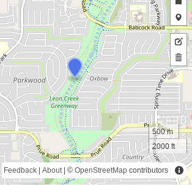
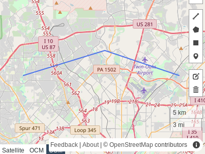
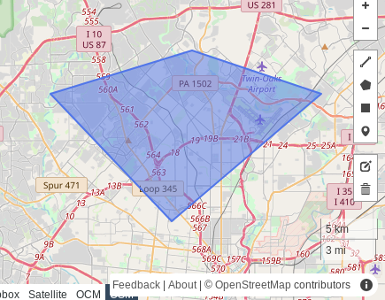

Geospatial Software Development
Josh Vernon, Software Developer, USAA
SADevs Meetup - September 2019
What is “geospatial”?
- Any data or system dealing with locations on Earth
- And the analysis of that data to solve problems
AKA - geographic information systems (GIS)
Geospatial Questions
- How far away is something from something else?
- How are things distributed across space?
- What things exist (or don’t exist) near other things?
- What’s the optimal route between one location and another?
Data Types
- vector: discrete objects - points, lines, and polygons
- raster: continuous surfaces - cells in a grid
Point
tuple of (longitude, latitude)
or (x, y)
(-98.632, 29.551)

Line
array of points
[(-98.632, 29.551), (-98.522, 29.58), (-98.422, 29.551)]

Polygon
array of points - first and last point are the same
[(-98.632, 29.551), (-98.522, 29.58), (-98.422, 29.551), (-98.538, 29.465), (-98.632, 29.551)]

Important Concepts
- computational geometry
- graph theory
- tree structures
- 3D graphics
Databases
- PostgreSQL (PostGIS)
- SQLite (SpatialLite)
- extensions to proprietary products (Oracle, SQL Server, etc.)
- NoSQL
- elastic
Core Libraries
- fiona (Python): easily read/write various vector data formats
- shapely (Python): perform geometric operations and spatial analysis
- GeoTools (Java): huge library with pretty much any geo stuff you might need
- PROJ (C++): for working with map projections
- GDAL (C++): everything you need for working with raster data
- Many more
Web Mapping SDKs
- OpenLayers: full-featured framework for creating web-based GIS apps
- leaflet: lightweight framework for creating responsive web maps
- Google Maps APIs
New Hotness
- LIDAR and high-resolution sensing
- indoor mapping
- image recognition and AI
- autonomous vehicles and telematics